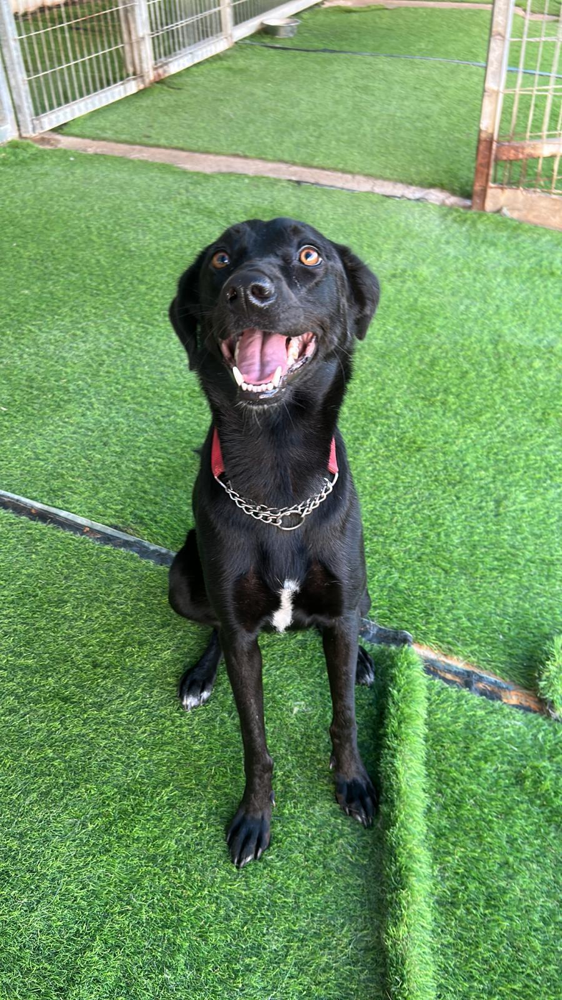

B.A. in Middle Eastern studies and Arabic Language from Bar-Ilan Univesity
QA qualification from Automation Academy
My introduction to QA came after my military service as a tank platoon commander.
Transitioning to the Armored Corps headquarters, I led a training department focused on tank Command & Control Systems.
In this role, I collaborated with Elbit Systems to identify and report software faults in the "Zayad" system.
As the IDF upgraded to the more advanced "Zayad 750", I played a pivotal role in integrating this new software into the Corps.
This involved frequent testing, feedback, and product refinement.
Through this experience, I recognized the breadth of the QA field and its alignment with my skills and interests.
We adopted Belle when she was 10 months old from Beer Sheva local animal shelter.
Before we took her she was in the shelter for four months, and before that she was a stray dog.
Belle is the best dog in the world, There's nothing I don't love in her.
Although she might be bully with some new dogs, she will always be my favorite.
Email: Nadavsagie1@gmail.com
Tel: 052-5209443
Have a question or want to collaborate? Feel free to reach out!
Hod HaSharon, Israel